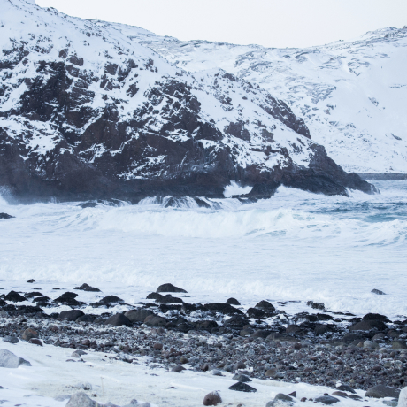
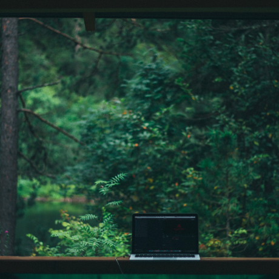

Путешествия по России
Настоящая страна не в выпусках новостей, а здесь.
Ваша полка - верхняя
Чего мы там не видели?
По опросам ВЦИОМ, 95% россиян мечтают куда-нибудь поехать,
но только 36% планируют провести отпуск в родной стране.
Мол, чего мы тут, дома, не видели? На самом деле, Россия — это целая вселенная
с ласковым морем юга, густыми лесами Саян и суровыми льдами плато Путорана.
А ещё увидеть все эти красоты можно без миллионов на счету, загранпаспорта и
многочасовых перелетов. Как, например, Вера Башмакова — смелая молодая мама,
которая взяла в охапку троих детей, усадила их в свою «Ладу» и проехала 20 тысяч
километров по родной стране. Мы выбрали и описали некоторые интересные места,
достойные вашего отпуска.
-
Часовых поясов 11
-
Объектов природного наследия ЮНЕСКО 12
-
Объектов культурного наследия ЮНЕСКО 16
-
Прироных заповедников 105
-
Аэропортов 241
Куршская коса
Здесь, посреди лесов и песчаных дюн, вы сможете увидеть два водных
горизонта — спокойного Куршского залива с одной стороны и подёрнутого
рябью волн Балтийского моря с другой. Уникальная природная зона на краю
российского анклава.
На этом Калининградская область не заканчивается. Для путешественника
и исследователя там же по соседству — самая западная точка России,
Балтийская коса, — и немецкое наследие россыпи небольших приморских городов.
Атмосфера здешних мест исключает суету, окуная в спокойствие природы и запах стального,
прохладного моря.
Кольский

Почти весь полуостров находится за Полярным кругом. Саамская тундра, от которой на юг —
тайга, а на север — Ледовитый океан, прикидывающийся Баренцевым морем.
Возможно, вы смотрели Звягинцева и даже слышали историю арктического фестиваля в Териберке.
Возможно, слово «Хибины» не осталось под снегом школьных воспоминаний об уроках географии.
Возможно, вы не интересовались пронизывающей земную кору сверхглубокой скважиной, а от
апатитов вас давно накрывает апатия. Но ваша мечта увидеть северное сияние начинает сбываться
с билетом в Мурманск.
Алтай

Алтай — одно из красивейших мест в России.
В первую очередь из-за гор: если ехать вдоль хребта, вы увидите склоны,
усыпанные соснами, горные реки и озёра. А если вы откроете в автомобиле окна,
сможете познакомиться с невидимым чудом здешних мест — горным воздухом.
Климат на Алтае умеренный, поэтому ехать сюда лучше всего летом.
Так вы увидите всё разнообразие местной флоры и фауны. По лесам Алтая бродят лоси,
над хребтами летают орлы, а на равнинах пасутся косули. И знаменитые манулы — тоже
обитатели Алтайского края.
Зимний Байкал
Всем известен Байкал как крупнейшее озеро
в мире. Многие также знают, что это самый большой источник пресной воды и
одно из красивейших мест в России.
Конечно, это всё так. Но Байкал ещё идеальное место для соревнований по скийорингу.
Это такой вид спорта, когда лыжник привязывает себя к мотоциклу, и тандем старается
развить как можно бóльшую скорость на льду. В марте 2019 года на
фестивале «Байкальская миля» был поставлен мировой рекорд — 197.011 км/ч.
Карелия
Сибирь заканчивается не на Урале, а в Карелии: образующая тайгу сибирская
лиственница не растёт западнее Водлозера. Зато здесь она вымахивает на 30
метров — леса карельских национальных парков из-за непроходимых болот никогда не знали
топора. Некоторым соснам уже больше чем полтысячелетия. Прикоснитесь к живому существу,
видевшему солнце раньше, чем увидал его Иван Грозный.
В девственном лесу на сотню километров не встретишь тропы. А на редких тропинках деревья
в паре метров от земли помечены медвежьими когтями. Чтобы все знали, кто тут хозяин.